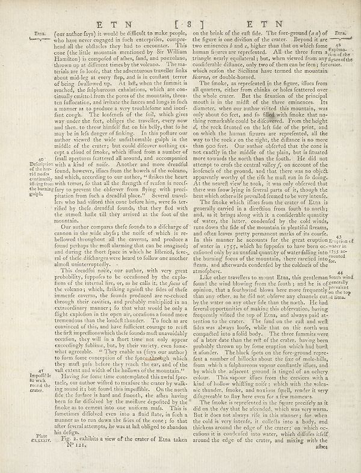

Scan ID britannica:309f765b1ecc83e0a7f7762e44b4a927a7555443:train:247
Image SHA-256 cb5b8fd3e311a9bed8b2fe35f9cf9ede4c3a49a0b0e651afa8f9c811fd0e0534
Status: ok. Running header: none (none). Removed page furniture: none.
PDF · raw Parse reply · LaTeX
Entries: E0006

| # | Class | Box | Parse 3.5 | Used text | Source |
|---|---|---|---|---|---|
| 0 | Title | [0.2627, 0.0375, 0.7891, 0.0625] | ET N [ 8 ] E T N | E T N [ 8 ] E T N | super_vl |
| 1 | Caption | [0.0869, 0.0633, 0.1211, 0.0836] | Eta. | Eta. | parse_fallback · box_too_small |
| 2 | Text | [0.1445, 0.0617, 0.5264, 0.4719] | (our author fays) it would be difficult to make people, who have never engaged in this enterprise, company hend all the oblidies they had to encounter. This cone (the little mountain mentioned by Sir William Flamman) is composed of the very hand, and postsecondary throw up a different times by the volcano. The mar- terials are lo boic, that the adventures traveller links about midly as every May, and is to contain terror of being feallowed up. Ask had, when the funumis is reached, the fulphureous exalations, which are conti- virtually entirely due the pores of the mountains, brava- ten fluctua | (our author fays) it would be difficult to make people, who have never engaged in such enterprises, comprehend all the obstacles they had to encounter. This cone (the little mountain mentioned by Sir William Hamilton) is composed of ashes, fand, and pozzolano, thrown up at different times by the volcano. The materials are fo loose, that the adventurous traveller finks about mid-leg at every step, and is in constant terror of being fwallowed up. At last, when the summit is reached, the sulphureous exhalations, which are continually emitted from the pores of the mountain, threaten suffocation, a | super_vl |
| 3 | Text | [0.1455, 0.4727, 0.5273, 0.5656] | Our author compares thefe funds to a discharge of common in the few days, is no roof of which, is the believed throughout all the cavears, and produces found perhaps the moft alarming that can be imagined; and during the short faces in which the illensary, real of their discifery were heard to follow one another almost uninterruptedly. | Our author compares these founds to a discharge of cannon in the wide abyss; the noise of which is rebellowed throughout all the caverns, and produces a found perhaps the most alarming that can be imagined; and during the short space in which he listened, several of these discharges were heard to follow one another almost uninterruptedly. | super_vl |
| 4 | Text | [0.1436, 0.5664, 0.5283, 0.7914] | This deadline note our author, with very great probability, fuppaid to be occasioned by the esplo- fons of the internal fire, or, as he calls is, the focus of the volume, which, filking squall the files of their domestic cavares, the found products are received through their cavities, and probably multiplied in an extraordinary memory. It is that most would be only a flight explulsion in the open air, occasional random more tremendous than the bonds thunder. To fuch as any convicted of this, and her full chance range so craft the first imprisonments which thefeo found muffaavably oscure, they | This dreadful noise, our author, with very great probability, supposes to be occasioned by the explosions of the internal fire, or, as he calls it, the focus of the volcano; which, striking against the sides of the immense caverns, the sounds produced are re-echoed through their cavities, and probably multiplied in an extraordinary manner; so that what would be only a flight explosion in the open air, occasions a sound more tremendous than the loudest thunder. To such as are convinced of this, and have sufficient courage to recur the first impressions which these sounds must unavoidably occasi | super_vl |
| 5 | Text | [0.1426, 0.7875, 0.5254, 0.9461] | Hinry for four time time completed the avulla fpec- tudo, our author whiled to matches the water by walk- ing sound it’s hot found this impulble. On the north flee, the farber is hard and, though, she also having been to for diffused by the mother deposited by the finde as to cement into one uniform mafs. This is fonctions followed even once a fluid here, its fact a manner as to run down the files of the case; is, that after several attempts, he was at lab obliged to abandon his deligen. | Having for some time contemplated this awful spectacle, our author wished to measure the crater by walking round it; but found this impracticable. On the north side the surface is hard and smooth, the ashes having been so far dissolved by the moisture deposited by the fume as to cement into one uniform mass. This is sometimes dissolved even into a fluid state, in such a manner as to run down the sides of the cone; so that after several attempts, he was at last obliged to abandon his design. Fig. 2. exhibits a view of the crater of Etna taken | super_vl |
| 6 | Text | [0.1748, 0.9203, 0.5244, 0.9484] | Fig. 2 exhibits a view of the crater of Eta taken No 121, | Fig. 2. exhibits a view of the crater of Etna taken No 121. | super_vl |
| 7 | Text | [0.5293, 0.0609, 0.9141, 0.168] | on the brick of the raft ride. The foreground (or a) of Ften. the figure is one division of the crater. Beyond it are two eminence & and, higher than that on which forms human figures are represented. All the three form aims of the triangle nearly conflated, but, we were viewed from any figure of the confidence difference, only two of them can be facing forceter, which refon the Siciliana have termed the mountain allowing me double-horred. | on the brink of the craft side. The fore-ground (a a) of the figure is one division of the crater. Beyond it are two eminences b and c, higher than that on which some human figures are reprefented. All the three form a triangle nearly equilateral; but, when viewed from any considerable distance, only two of them can be seen; for which reason the Sicilians have termed the mountain bicorne, or double-horned. | super_vl |
| 8 | Text | [0.5303, 0.1688, 0.9131, 0.4211] | The finokes, as reproefident in the figure, ifles from all quarters, other form chains or holes detected over the whole crater. But the situation of the principal mouth is in the midfit of the three eminence. Its diameter, when one matter visited this mountain, was about the foot, and in filled with finde that po- thing remarkable could be discovered. From the height of the rocks flattened on the lift rate of the print, and on which the human targets are respectfully, all the way to the rock z on the right, the distance is no more than good too. Our author offered that the cone is exactly in t | The smoke, as represented in the figure, issues from all quarters, either from chinks or holes scattered over the whole crater. But the situation of the principal mouth is in the midst of the three eminences. Its diameter, when our author visited this mountain, was only about 60 feet, and so filled with smoke that no thing remarkable could be discovered. From the height of the rock situated on the left side of the print, and on which the human figures are represented, all the way to the rock s on the right, the distance is no more than 900 feet. Our author offered that the cone is not exactly | super_vl |
| 9 | Text | [0.5312, 0.4219, 0.9121, 0.4945] | The finde which differ from the current of Eta is generally carried in a direction from forth to northy and, as it bring along with it a comfortable quantity of water, the latter, conducted by the cold winds, runs down the tide of the mountain in plentifils means, and often leaves pretty permanent marks of its courier. | The smoke which issues from the crater of Etna is generally carried in a direction from south to north; and, as it brings along with it a considerable quantity of water, the latter, condensed by the cold winds, runs down the side of the mountain in plentiful streams, and often leaves pretty permanent marks of its course. | super_vl |
| 10 | Text | [0.5322, 0.4938, 0.9512, 0.5781] | In the mainte he accounts for the great eruption of water in 1755, which he fuppoder to have been oc-water in colored only by an unusual quantity of water falling into 1733, as- the burned fears of the mountains, here needed more for, foam, and afterwards condensed by the coldness of the atmosphere. | and often leaves pretty permanent marks of its course. In this manner he accounts for the great eruption of water in 1755, which he supposes to have been occasioned only by an unusual quantity of water falling into the burning focus of the mountain, there raised into steam, and afterwards condensed by the coldness of the atmosphere. | super_vl |
| 11 | Text | [0.5332, 0.5773, 0.915, 0.843] | Like other travellers to mount Etaa, this gentleman South wind found the wind blowing from the fourth ; and he is of generally opinion, that a fortunately allows here now requested on the top than any other, as he did not observe any channels curral drama by the water on any other side than the north. He had reversal operation of making this discussion, having frequently visited the top of Etaa, and always paid attention to the crater. The fault on the cuf and well field was always loads, while that on the north was compelled into a fold body. The three formamists were of a later date than the | Like other travellers to mount Etna, this gentleman found the wind blowing from the fourth; and he is of opinion, that a fourthwind blows here more frequently than any other, as he did not observe any channels cut by the water on any other side than the north. He had several opportunities of making this observation, having frequently visited the top of Etna, and always paid attention to the crater. The fend on the call and west sides was always loose, while that on the north was compacted into a solid body. The three fummits were of a later date than the rest of the crater, having been probabl | super_vl |
| 12 | Text | [0.5342, 0.8422, 0.9951, 0.9492] | The findex is reproduced in the figures precisely as it did on the day that he afecided, which was very warm. But it does not always life in this moment, for white the cold always richts, collects into a body, and thickens around the edge of the crater; on which oc- cutions it is condensed into water, which difficile itself around the edge of the crater, and mixing with the alheshegues | The smoke is represented in the figure precisely as it did on the day that he ascended, which was very warm. But it does not always rise in this manner; for when the cold is very intense, it collects into a body, and thickens around the edge of the crater: on which occasions it is condensed into water, which diffuses itself around the edge of the crater, and mixing with the ashes | super_vl |
Britannica scans: National Library of Scotland, CC0 1.0. Wikipedia text: Wikipedia contributors, CC BY-SA 4.0, revision links on each page. Generated 2026-10-18T13:26:14+00:00.